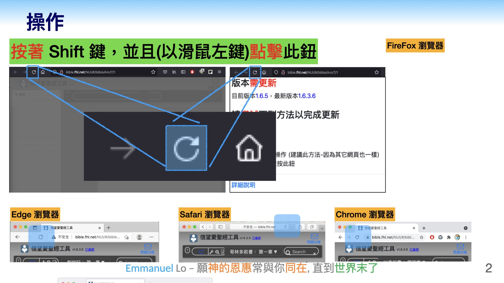

版本
需更新
目前版本
unknown
，最新版本
請
嘗試
下列方法以完成更新
方法1:
點擊此鈕
方法2:
點擊此鈕
方法3:
電腦{非手機}可用
按照下圖操作
點擊放大

方法4:
Android手機
點擊影片，放大播放
1. 點擊 ...符號 2. 設定 3. 網站設定 4.已儲存資料 5. bible.fhl.net 網址 6. 垃圾桶 7. 清除
方法5: Google "強制 重新載入 android" 、 "強制 重新載入 iphone" 、 "強制 重新載入 IE" 、總之，使用關鍵字 #強制 #重新載入 #Hard #Reload 再配合你用的裝置
查看
版本更新資訊
查看
好奇寶寶
看
過來 - 技術概要
詳細說明
當FHL程式版本更新後，許多人的畫面是一片灰，而造成原因是瀏覽器的cache功能(當然，有時候是Bug)。 cache是為了"節省網路流量"而存在，一些程式碼、圖片沒必要"每次"都抓一次(沒錯，一些資料將存在你的電腦中)。 而當FHL一些程式碼更新，然而你的電腦仍用舊的檔案，就會造成這樣現象。
'瀏覽器'就是指 chrome 、 firefox 、 edge 、 safari 等等軟體。
方法1-原理
呼叫 javascript 的 location.reload (true)。 它會保證 .html .js .css 任何檔案，都會重新抓取，像新的一樣。 用「隱私視窗/無痕視窗/inPrivate視窗/私密視窗」開啟，也是一樣效果。 {對工程師}不幸的是，reload (true) 這個函式，在標準協定中已經被拿掉了，也就是說，以後這個方法有可能失效。 正因為如此，才建議大家學會第三種方法。
方法2-原理
若以 POST 協定{而非GET協定}取得 .html 網頁，一定會回傳最新的 html，而不是用 Cache 檔。 然而，與方法1不同的是，其它檔案{例如.js .css}仍然有可能用 Cache 檔。
要以 POST 協定載入網頁，就是{在程式碼中}產生一個 form 表單，{呼叫submit函式}提交時，方法指定為 POST 協定{而非GET}。
方法3-原理
當按著 shift 時，按下 refresh 鈕，就是，全部檔案都抓最新的，不要用 Cache 檔。 就是以程式呼叫 location.reload(true) 是一樣的效果。
方法4-原理
操作目的：手動的清除 Cache 檔